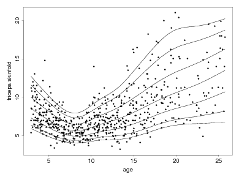

Books

Back to
Home
|
Research
Highly Structured Stochastic Systems
, the book: edited by Peter J. Green, Nils Lid Hjort and Sylvia Richardson; OUP, 2003
COMPSTAT: Proceedings in Computational Statistics
: 13th Symposium held in Bristol, Great Britain, 1998, edited by Roger Payne and Peter Green; Physica-Verlag, 1998
Nonparametric Regression and Generalized Linear Models: A Roughness Penalty Approach
, by Peter J. Green and Bernard Silverman; Chapman and Hall, 1993;
errata list